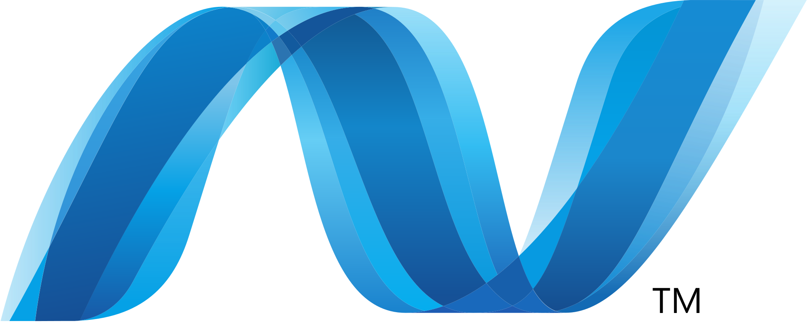
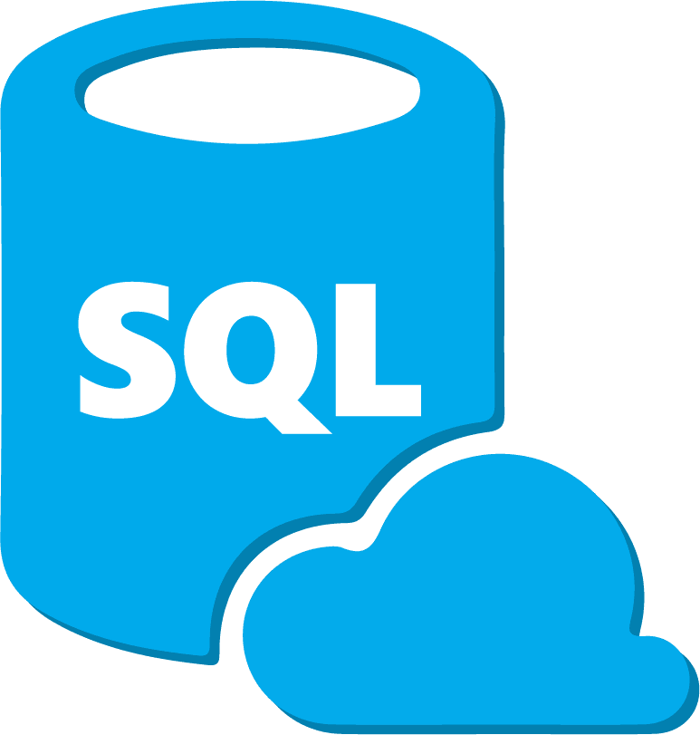

Java es un lenguaje de programación orientado a objetos que se incorporó al ámbito de la informática en los años noventa. La idea de Java es que pueda realizarse programas con la posibilidad de ejecutarse en cualquier contexto, en cualquier ambiente, siendo así su portabilidad uno de sus principales logros

También conocido como “Lenguaje de programación de sistemas” desarrollado en el año 1972 por Dennis Ritchie para UNIX un sistema operativo multiplataforma. El lenguaje C es del tipo lenguaje estructurado como son Pascal, Fortran, Basic.

Python es un lenguaje de programación interpretado cuya filosofía hace hincapié en la legibilidad de su código. Se trata de un lenguaje de programación multiparadigma, ya que soporta orientación a objetos, programación imperativa y, en menor medida, programación funcional.

C# (pronunciado si sharp en inglés) es un lenguaje de programación multiparadigma desarrollado y estandarizado por Microsoft como parte de su plataforma .NET, que después fue aprobado como un estándar por la ECMA (ECMA-334) e ISO (ISO/IEC 23270).

C++ es un lenguaje de programación diseñado en 1979 por Bjarne Stroustrup. La intención de su creación fue extender al lenguaje de programación C mecanismos que permiten la manipulación de objetos. En ese sentido, desde el punto de vista de los lenguajes orientados a objetos, C++ es un lenguaje híbrido.

Definición de Visual Basic. En el mundo de la programación informática, uno de los lenguajes más populares y conocidos es el de Visual Basic. Creado en 1991 por Alan Cooper para Microsoft, este paquete permite programar contenidos informáticos gráficos de manera simple y accesible.

La plataforma . NET de Microsoft es un componente de software que puede ser añadido al sistema operativo Windows. Provee un extenso conjunto de soluciones predefinidas para necesidades generales de la programación de aplicaciones, y administra la ejecución de los programas escritos específicamente con la plataforma.

JavaScript (abreviado comúnmente JS) es un lenguaje de programación interpretado, dialecto del estándar ECMAScript. Se define como orientado a objetos, basado en prototipos, imperativo, débilmente tipado y dinámico.

PHP es un lenguaje de programación de uso general que se adapta especialmente al desarrollo web. Fue creado inicialmente por el programador danés-canadiense Rasmus Lerdorf en 1994.

Swift es un lenguaje de programación multiparadigma creado por Apple enfocado en el desarrollo de aplicaciones para iOS y macOS. Fue presentado en la WWDC 2014 y está diseñado para integrarse con los Frameworks Cocoa y Cocoa Touch; puede usar cualquier biblioteca programada en Objective-C y llamar a funciones de C.

SQL (por sus siglas en inglés Structured Query Language; en español lenguaje de consulta estructurada) es un lenguaje de dominio específico utilizado en programación, diseñado para administrar, y recuperar información de sistemas de gestión de bases de datos relacionales.